2026 Higher Human Biology - Paper 2 marking instructions
Source: Scottish Qualifications Authority (SQA) / Qualifications Scotland. This is a StemInteract HTML companion, not an official HTML edition. Extracted text is supplied alongside unaltered page images; use the images or original PDF for table layout, diagrams and symbols.
Jump to a question
PDF page 1
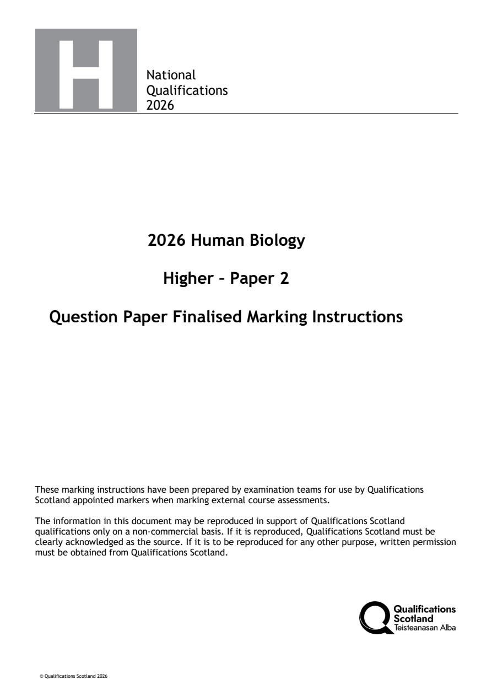
Selectable page text
National
Qualifications
2026
2026 Human Biology
Higher – Paper 2
Question Paper Finalised Marking Instructions
These marking instructions have been prepared by examination teams for use by Qualifications
Scotland appointed markers when marking external course assessments.
The information in this document may be reproduced in support of Qualifications Scotland
qualifications only on a non-commercial basis. If it is reproduced, Qualifications Scotland must be
clearly acknowledged as the source. If it is to be reproduced for any other purpose, written permission
must be obtained from Qualifications Scotland.
© Qualifications Scotland 2026PDF page 2
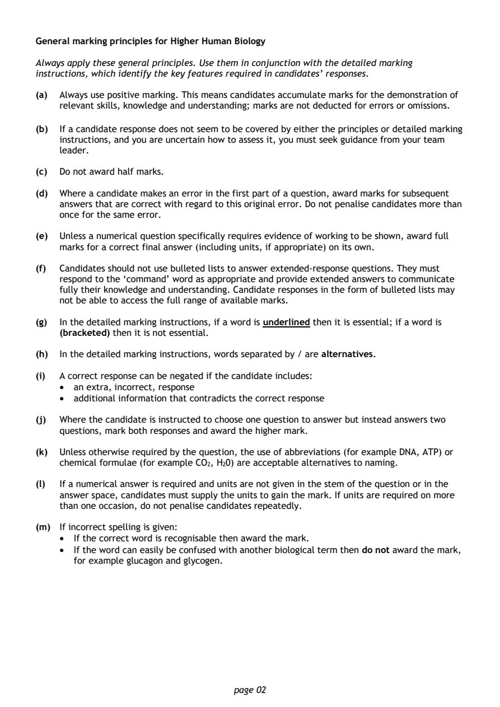
Selectable page text
General marking principles for Higher Human Biology
Always apply these general principles. Use them in conjunction with the detailed marking
instructions, which identify the key features required in candidates’ responses.
(a) Always use positive marking. This means candidates accumulate marks for the demonstration of
relevant skills, knowledge and understanding; marks are not deducted for errors or omissions.
(b) If a candidate response does not seem to be covered by either the principles or detailed marking
instructions, and you are uncertain how to assess it, you must seek guidance from your team
leader.
(c) Do not award half marks.
(d) Where a candidate makes an error in the first part of a question, award marks for subsequent
answers that are correct with regard to this original error. Do not penalise candidates more than
once for the same error.
(e) Unless a numerical question specifically requires evidence of working to be shown, award full
marks for a correct final answer (including units, if appropriate) on its own.
(f) Candidates should not use bulleted lists to answer extended-response questions. They must
respond to the ‘command’ word as appropriate and provide extended answers to communicate
fully their knowledge and understanding. Candidate responses in the form of bulleted lists may
not be able to access the full range of available marks.
(g) In the detailed marking instructions, if a word is underlined then it is essential; if a word is
(bracketed) then it is not essential.
(h) In the detailed marking instructions, words separated by / are alternatives.
(i) A correct response can be negated if the candidate includes:
• an extra, incorrect, response
• additional information that contradicts the correct response
(j) Where the candidate is instructed to choose one question to answer but instead answers two
questions, mark both responses and award the higher mark.
(k) Unless otherwise required by the question, the use of abbreviations (for example DNA, ATP) or
chemical formulae (for example CO , H 0) are acceptable alternatives to naming.
2 2
(l) If a numerical answer is required and units are not given in the stem of the question or in the
answer space, candidates must supply the units to gain the mark. If units are required on more
than one occasion, do not penalise candidates repeatedly.
(m) If incorrect spelling is given:
• If the correct word is recognisable then award the mark.
• If the word can easily be confused with another biological term then do not award the mark,
for example glucagon and glycogen.
page 02PDF page 3
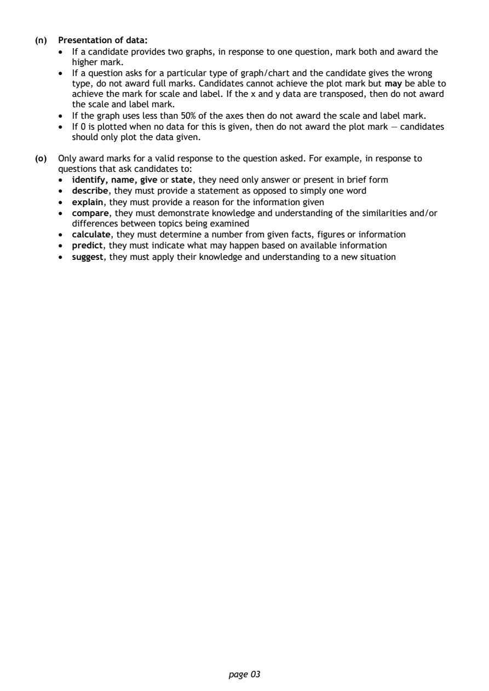
Selectable page text
(n) Presentation of data:
• If a candidate provides two graphs, in response to one question, mark both and award the
higher mark.
• If a question asks for a particular type of graph/chart and the candidate gives the wrong
type, do not award full marks. Candidates cannot achieve the plot mark but may be able to
achieve the mark for scale and label. If the x and y data are transposed, then do not award
the scale and label mark.
• If the graph uses less than 50% of the axes then do not award the scale and label mark.
• If 0 is plotted when no data for this is given, then do not award the plot mark — candidates
should only plot the data given.
(o) Only award marks for a valid response to the question asked. For example, in response to
questions that ask candidates to:
• identify, name, give or state, they need only answer or present in brief form
• describe, they must provide a statement as opposed to simply one word
• explain, they must provide a reason for the information given
• compare, they must demonstrate knowledge and understanding of the similarities and/or
differences between topics being examined
• calculate, they must determine a number from given facts, figures or information
• predict, they must indicate what may happen based on available information
• suggest, they must apply their knowledge and understanding to a new situation
page 03PDF page 4
Question 1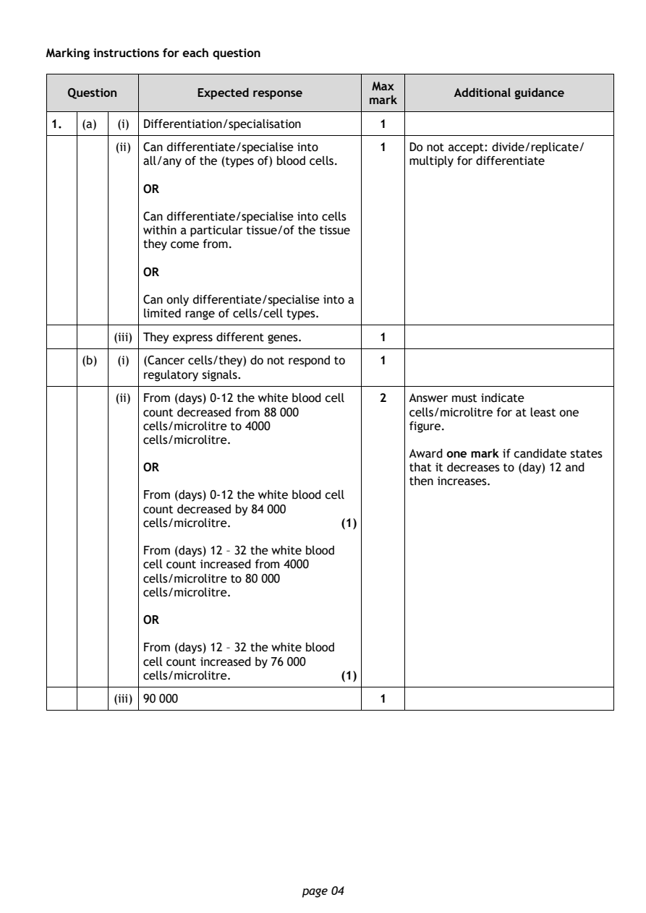
Selectable page text
Marking instructions for each question
Max
Question Expected response Additional guidance
mark
1. (a) (i) Differentiation/specialisation 1
(ii) Can differentiate/specialise into 1 Do not accept: divide/replicate/
all/any of the (types of) blood cells. multiply for differentiate
OR
Can differentiate/specialise into cells
within a particular tissue/of the tissue
they come from.
OR
Can only differentiate/specialise into a
limited range of cells/cell types.
(iii) They express different genes. 1
(b) (i) (Cancer cells/they) do not respond to 1
regulatory signals.
(ii) From (days) 0-12 the white blood cell 2 Answer must indicate
count decreased from 88 000 cells/microlitre for at least one
cells/microlitre to 4000 figure.
cells/microlitre.
Award one mark if candidate states
OR that it decreases to (day) 12 and
then increases.
From (days) 0-12 the white blood cell
count decreased by 84 000
cells/microlitre. (1)
From (days) 12 – 32 the white blood
cell count increased from 4000
cells/microlitre to 80 000
cells/microlitre.
OR
From (days) 12 – 32 the white blood
cell count increased by 76 000
cells/microlitre. (1)
(iii) 90 000 1
page 04PDF page 5
Question 2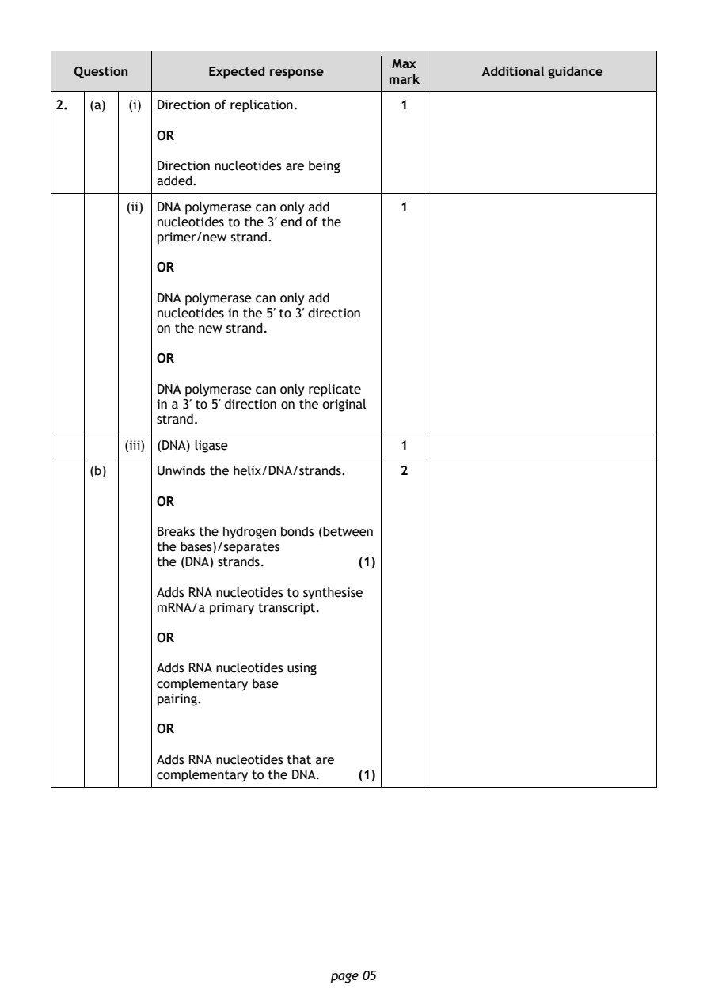
Selectable page text
Max
Question Expected response Additional guidance
mark
2. (a) (i) Direction of replication. 1
OR
Direction nucleotides are being
added.
(ii) DNA polymerase can only add 1
nucleotides to the 3′ end of the
primer/new strand.
OR
DNA polymerase can only add
nucleotides in the 5′ to 3′ direction
on the new strand.
OR
DNA polymerase can only replicate
in a 3′ to 5′ direction on the original
strand.
(iii) (DNA) ligase 1
(b) Unwinds the helix/DNA/strands. 2
OR
Breaks the hydrogen bonds (between
the bases)/separates
the (DNA) strands. (1)
Adds RNA nucleotides to synthesise
mRNA/a primary transcript.
OR
Adds RNA nucleotides using
complementary base
pairing.
OR
Adds RNA nucleotides that are
complementary to the DNA. (1)
page 05PDF page 6
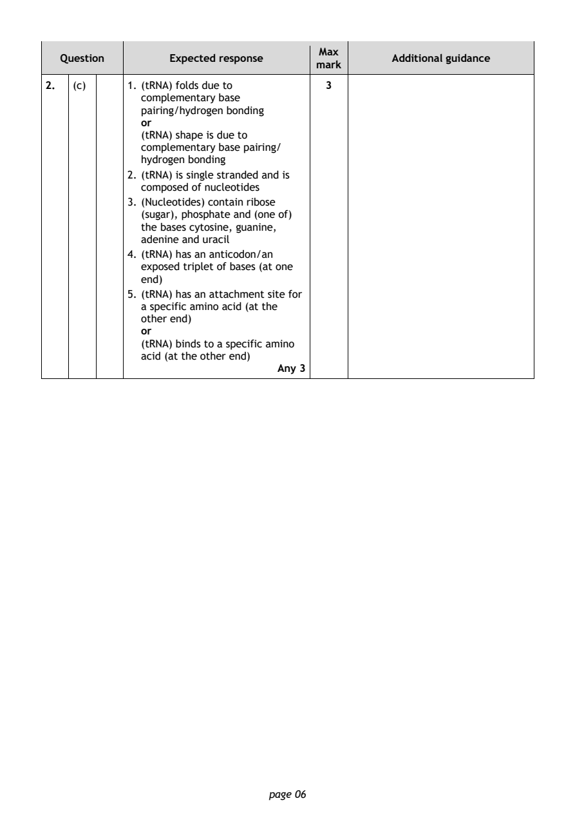
Selectable page text
Max
Question Expected response Additional guidance
mark
2. (c) 1. (tRNA) folds due to 3
complementary base
pairing/hydrogen bonding
or
(tRNA) shape is due to
complementary base pairing/
hydrogen bonding
2. (tRNA) is single stranded and is
composed of nucleotides
3. (Nucleotides) contain ribose
(sugar), phosphate and (one of)
the bases cytosine, guanine,
adenine and uracil
4. (tRNA) has an anticodon/an
exposed triplet of bases (at one
end)
5. (tRNA) has an attachment site for
a specific amino acid (at the
other end)
or
(tRNA) binds to a specific amino
acid (at the other end)
Any 3
page 06PDF page 7
Question 3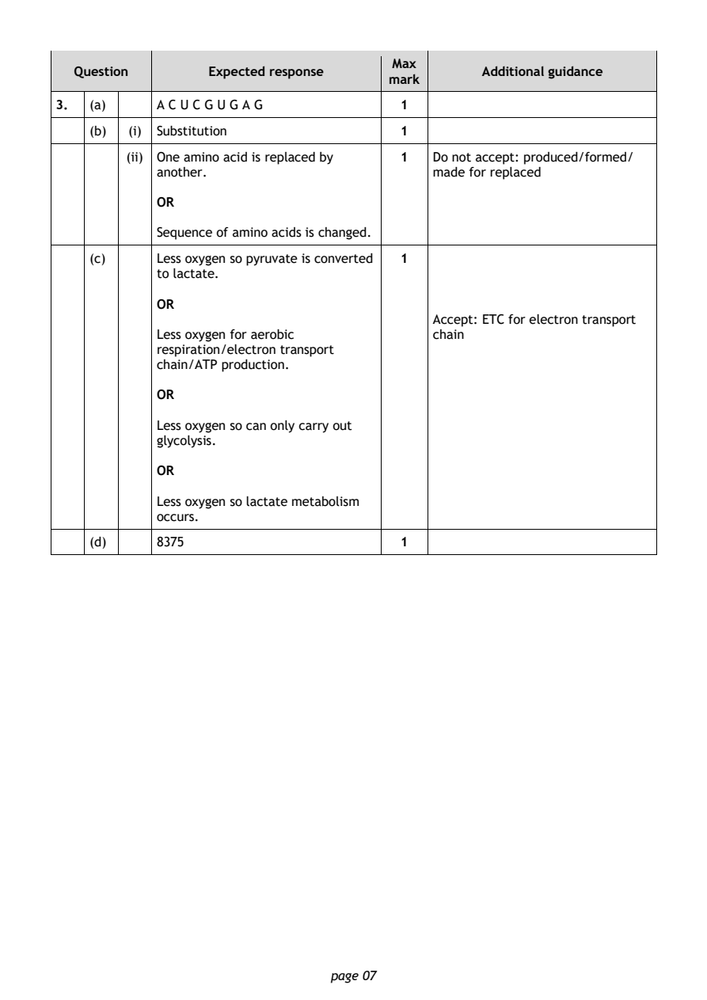
Selectable page text
Max
Question Expected response Additional guidance
mark
3. (a) A C U C G U G A G 1
(b) (i) Substitution 1
(ii) One amino acid is replaced by 1 Do not accept: produced/formed/
another. made for replaced
OR
Sequence of amino acids is changed.
(c) Less oxygen so pyruvate is converted 1
to lactate.
OR
Accept: ETC for electron transport
Less oxygen for aerobic chain
respiration/electron transport
chain/ATP production.
OR
Less oxygen so can only carry out
glycolysis.
OR
Less oxygen so lactate metabolism
occurs.
(d) 8375 1
page 07PDF page 8
Question 4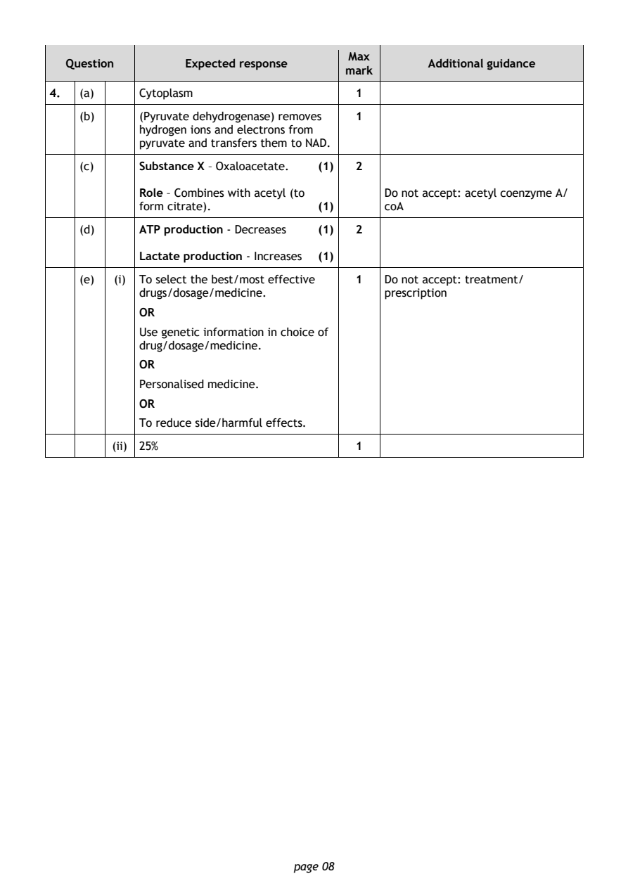
Selectable page text
Max
Question Expected response Additional guidance
mark
4. (a) Cytoplasm 1
(b) (Pyruvate dehydrogenase) removes 1
hydrogen ions and electrons from
pyruvate and transfers them to NAD.
(c) Substance X – Oxaloacetate. (1) 2
Role – Combines with acetyl (to Do not accept: acetyl coenzyme A/
form citrate). (1) coA
(d) ATP production - Decreases (1) 2
Lactate production - Increases (1)
(e) (i) To select the best/most effective 1 Do not accept: treatment/
drugs/dosage/medicine. prescription
OR
Use genetic information in choice of
drug/dosage/medicine.
OR
Personalised medicine.
OR
To reduce side/harmful effects.
(ii) 25% 1
page 08PDF page 9
Question 5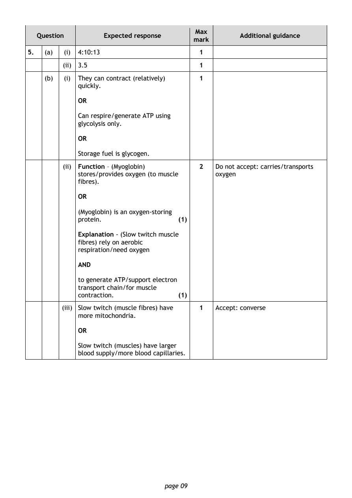
Selectable page text
Max
Question Expected response Additional guidance
mark
5. (a) (i) 4:10:13 1
(ii) 3.5 1
(b) (i) They can contract (relatively) 1
quickly.
OR
Can respire/generate ATP using
glycolysis only.
OR
Storage fuel is glycogen.
(ii) Function – (Myoglobin) 2 Do not accept: carries/transports
stores/provides oxygen (to muscle oxygen
fibres).
OR
(Myoglobin) is an oxygen-storing
protein. (1)
Explanation - (Slow twitch muscle
fibres) rely on aerobic
respiration/need oxygen
AND
to generate ATP/support electron
transport chain/for muscle
contraction. (1)
(iii) Slow twitch (muscle fibres) have 1 Accept: converse
more mitochondria.
OR
Slow twitch (muscles) have larger
blood supply/more blood capillaries.
page 09PDF page 10
Question 6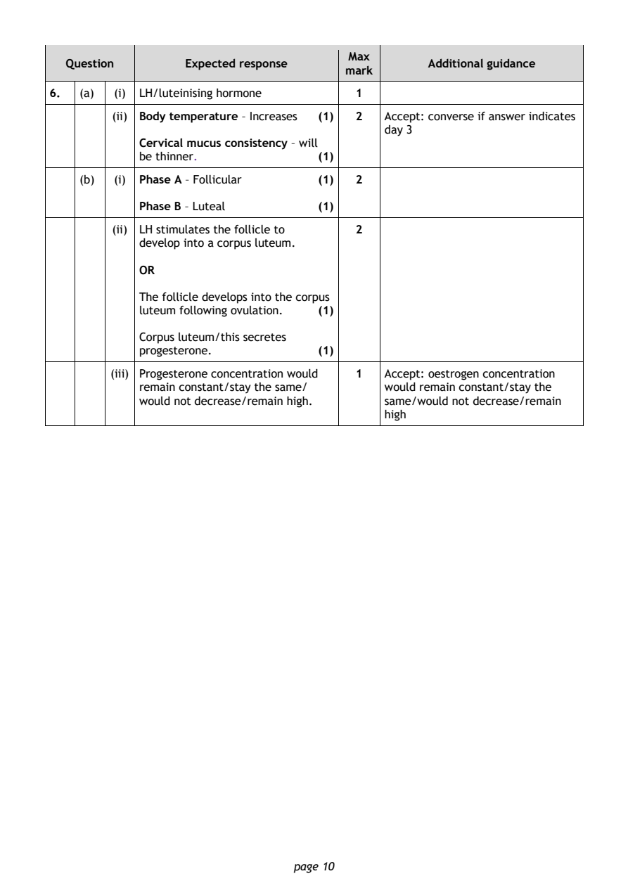
Selectable page text
Max
Question Expected response Additional guidance
mark
6. (a) (i) LH/luteinising hormone 1
(ii) Body temperature – Increases (1) 2 Accept: converse if answer indicates
day 3
Cervical mucus consistency – will
be thinner. (1)
(b) (i) Phase A – Follicular (1) 2
Phase B – Luteal (1)
(ii) LH stimulates the follicle to 2
develop into a corpus luteum.
OR
The follicle develops into the corpus
luteum following ovulation. (1)
Corpus luteum/this secretes
progesterone. (1)
(iii) Progesterone concentration would 1 Accept: oestrogen concentration
remain constant/stay the same/ would remain constant/stay the
would not decrease/remain high. same/would not decrease/remain
high
page 10PDF page 11
Question 7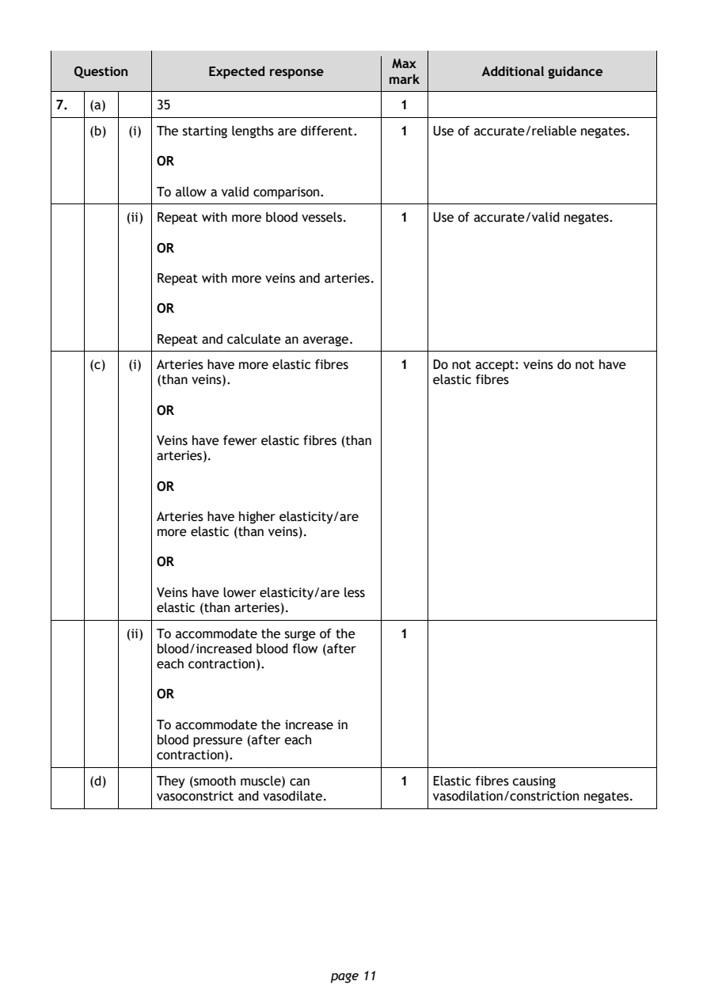
Selectable page text
Max
Question Expected response Additional guidance
mark
7. (a) 35 1
(b) (i) The starting lengths are different. 1 Use of accurate/reliable negates.
OR
To allow a valid comparison.
(ii) Repeat with more blood vessels. 1 Use of accurate/valid negates.
OR
Repeat with more veins and arteries.
OR
Repeat and calculate an average.
(c) (i) Arteries have more elastic fibres 1 Do not accept: veins do not have
(than veins). elastic fibres
OR
Veins have fewer elastic fibres (than
arteries).
OR
Arteries have higher elasticity/are
more elastic (than veins).
OR
Veins have lower elasticity/are less
elastic (than arteries).
(ii) To accommodate the surge of the 1
blood/increased blood flow (after
each contraction).
OR
To accommodate the increase in
blood pressure (after each
contraction).
(d) They (smooth muscle) can 1 Elastic fibres causing
vasoconstrict and vasodilate. vasodilation/constriction negates.
page 11PDF page 12
Question 8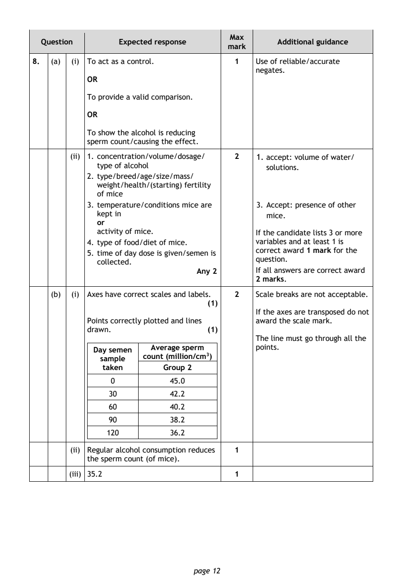
Selectable page text
Max
Question Expected response Additional guidance
mark
8. (a) (i) To act as a control. 1 Use of reliable/accurate
negates.
OR
To provide a valid comparison.
OR
To show the alcohol is reducing
sperm count/causing the effect.
(ii) 1. concentration/volume/dosage/ 2 1. accept: volume of water/
type of alcohol solutions.
2. type/breed/age/size/mass/
weight/health/(starting) fertility
of mice
3. temperature/conditions mice are 3. Accept: presence of other
kept in mice.
or
activity of mice. If the candidate lists 3 or more
4. type of food/diet of mice. variables and at least 1 is
correct award 1 mark for the
5. time of day dose is given/semen is
question.
collected.
Any 2 If all answers are correct award
2 marks.
(b) (i) Axes have correct scales and labels. 2 Scale breaks are not acceptable.
(1)
If the axes are transposed do not
Points correctly plotted and lines award the scale mark.
drawn. (1)
The line must go through all the
Day semen Average sperm points.
sample count (million/cm3)
taken Group 2
0 45.0
30 42.2
60 40.2
90 38.2
120 36.2
(ii) Regular alcohol consumption reduces 1
the sperm count (of mice).
(iii) 35.2 1
page 12PDF page 13
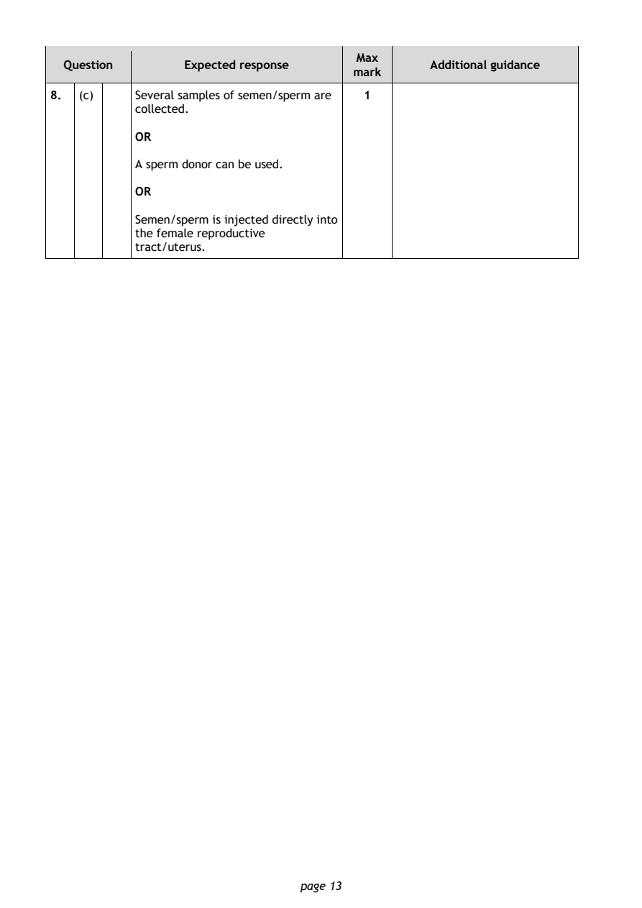
Selectable page text
Max
Question Expected response Additional guidance
mark
8. (c) Several samples of semen/sperm are 1
collected.
OR
A sperm donor can be used.
OR
Semen/sperm is injected directly into
the female reproductive
tract/uterus.
page 13PDF page 14
Question 9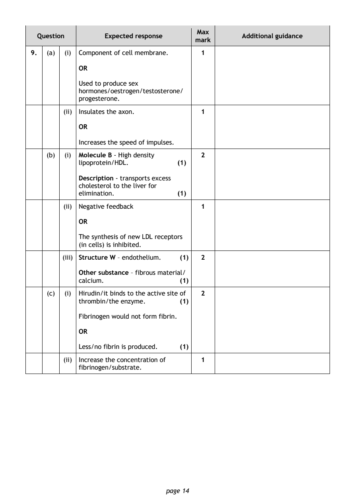
Selectable page text
Max
Question Expected response Additional guidance
mark
9. (a) (i) Component of cell membrane. 1
OR
Used to produce sex
hormones/oestrogen/testosterone/
progesterone.
(ii) Insulates the axon. 1
OR
Increases the speed of impulses.
(b) (i) Molecule B - High density 2
lipoprotein/HDL. (1)
Description - transports excess
cholesterol to the liver for
elimination. (1)
(ii) Negative feedback 1
OR
The synthesis of new LDL receptors
(in cells) is inhibited.
(iii) Structure W – endothelium. (1) 2
Other substance – fibrous material/
calcium. (1)
(c) (i) Hirudin/it binds to the active site of 2
thrombin/the enzyme. (1)
Fibrinogen would not form fibrin.
OR
Less/no fibrin is produced. (1)
(ii) Increase the concentration of 1
fibrinogen/substrate.
page 14PDF page 15
Question 10Question 11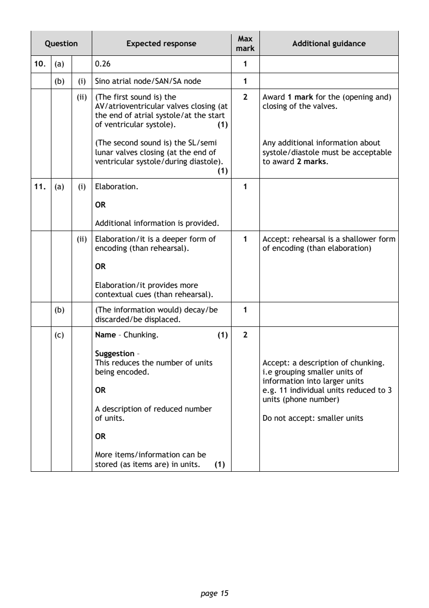
Selectable page text
Max
Question Expected response Additional guidance
mark
10. (a) 0.26 1
(b) (i) Sino atrial node/SAN/SA node 1
(ii) (The first sound is) the 2 Award 1 mark for the (opening and)
AV/atrioventricular valves closing (at closing of the valves.
the end of atrial systole/at the start
of ventricular systole). (1)
(The second sound is) the SL/semi Any additional information about
lunar valves closing (at the end of systole/diastole must be acceptable
ventricular systole/during diastole). to award 2 marks.
(1)
11. (a) (i) Elaboration. 1
OR
Additional information is provided.
(ii) Elaboration/it is a deeper form of 1 Accept: rehearsal is a shallower form
encoding (than rehearsal). of encoding (than elaboration)
OR
Elaboration/it provides more
contextual cues (than rehearsal).
(b) (The information would) decay/be 1
discarded/be displaced.
(c) Name – Chunking. (1) 2
Suggestion –
This reduces the number of units Accept: a description of chunking.
being encoded. i.e grouping smaller units of
information into larger units
OR e.g. 11 individual units reduced to 3
units (phone number)
A description of reduced number
of units. Do not accept: smaller units
OR
More items/information can be
stored (as items are) in units. (1)
page 15PDF page 16
Question 12Question 13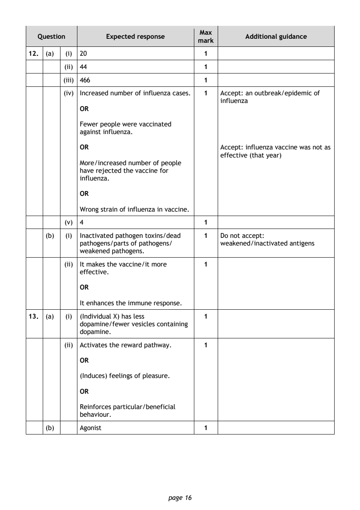
Selectable page text
Max
Question Expected response Additional guidance
mark
12. (a) (i) 20 1
(ii) 44 1
(iii) 466 1
(iv) Increased number of influenza cases. 1 Accept: an outbreak/epidemic of
influenza
OR
Fewer people were vaccinated
against influenza.
OR Accept: influenza vaccine was not as
effective (that year)
More/increased number of people
have rejected the vaccine for
influenza.
OR
Wrong strain of influenza in vaccine.
(v) 4 1
(b) (i) Inactivated pathogen toxins/dead 1 Do not accept:
pathogens/parts of pathogens/ weakened/inactivated antigens
weakened pathogens.
(ii) It makes the vaccine/it more 1
effective.
OR
It enhances the immune response.
13. (a) (i) (Individual X) has less 1
dopamine/fewer vesicles containing
dopamine.
(ii) Activates the reward pathway. 1
OR
(Induces) feelings of pleasure.
OR
Reinforces particular/beneficial
behaviour.
(b) Agonist 1
page 16PDF page 17
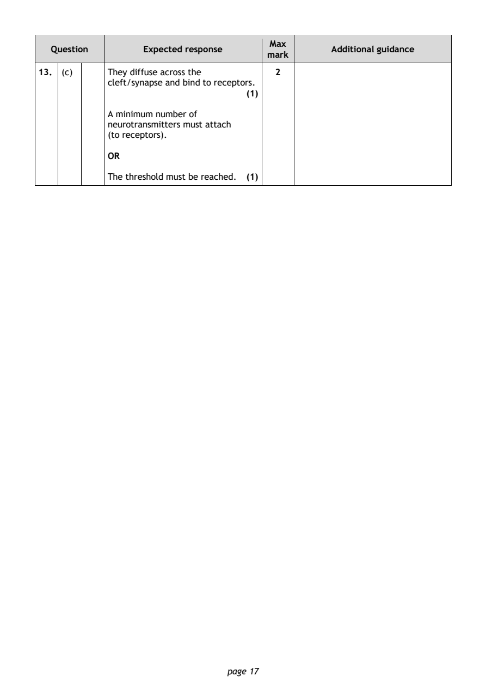
Selectable page text
Max
Question Expected response Additional guidance
mark
13. (c) They diffuse across the 2
cleft/synapse and bind to receptors.
(1)
A minimum number of
neurotransmitters must attach
(to receptors).
OR
The threshold must be reached. (1)
page 17PDF page 18
Question 14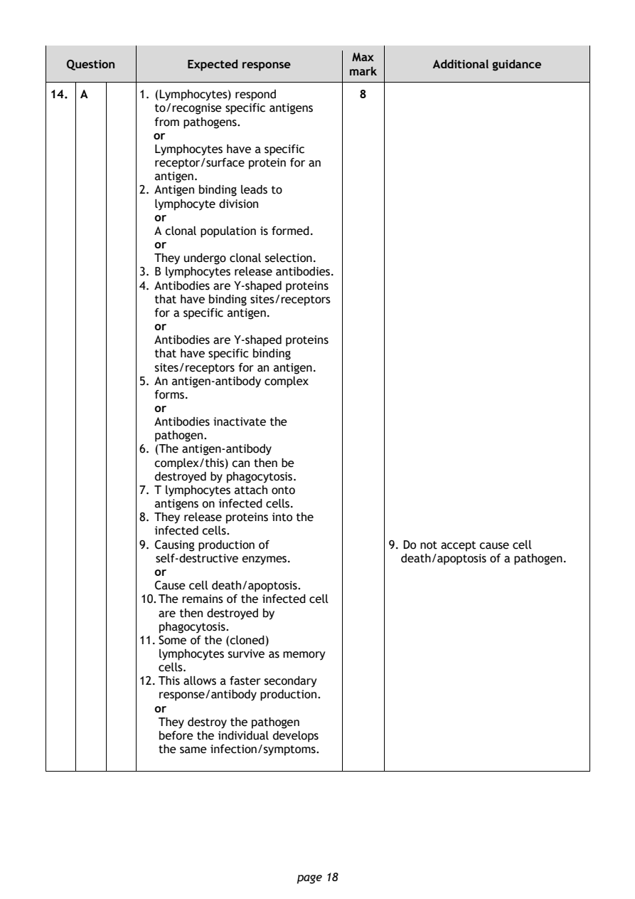
Selectable page text
Max
Question Expected response Additional guidance
mark
14. A 1. (Lymphocytes) respond 8
to/recognise specific antigens
from pathogens.
or
Lymphocytes have a specific
receptor/surface protein for an
antigen.
2. Antigen binding leads to
lymphocyte division
or
A clonal population is formed.
or
They undergo clonal selection.
3. B lymphocytes release antibodies.
4. Antibodies are Y-shaped proteins
that have binding sites/receptors
for a specific antigen.
or
Antibodies are Y-shaped proteins
that have specific binding
sites/receptors for an antigen.
5. An antigen-antibody complex
forms.
or
Antibodies inactivate the
pathogen.
6. (The antigen-antibody
complex/this) can then be
destroyed by phagocytosis.
7. T lymphocytes attach onto
antigens on infected cells.
8. They release proteins into the
infected cells.
9. Causing production of 9. Do not accept cause cell
self-destructive enzymes. death/apoptosis of a pathogen.
or
Cause cell death/apoptosis.
10. The remains of the infected cell
are then destroyed by
phagocytosis.
11. Some of the (cloned)
lymphocytes survive as memory
cells.
12. This allows a faster secondary
response/antibody production.
or
They destroy the pathogen
before the individual develops
the same infection/symptoms.
page 18PDF page 19
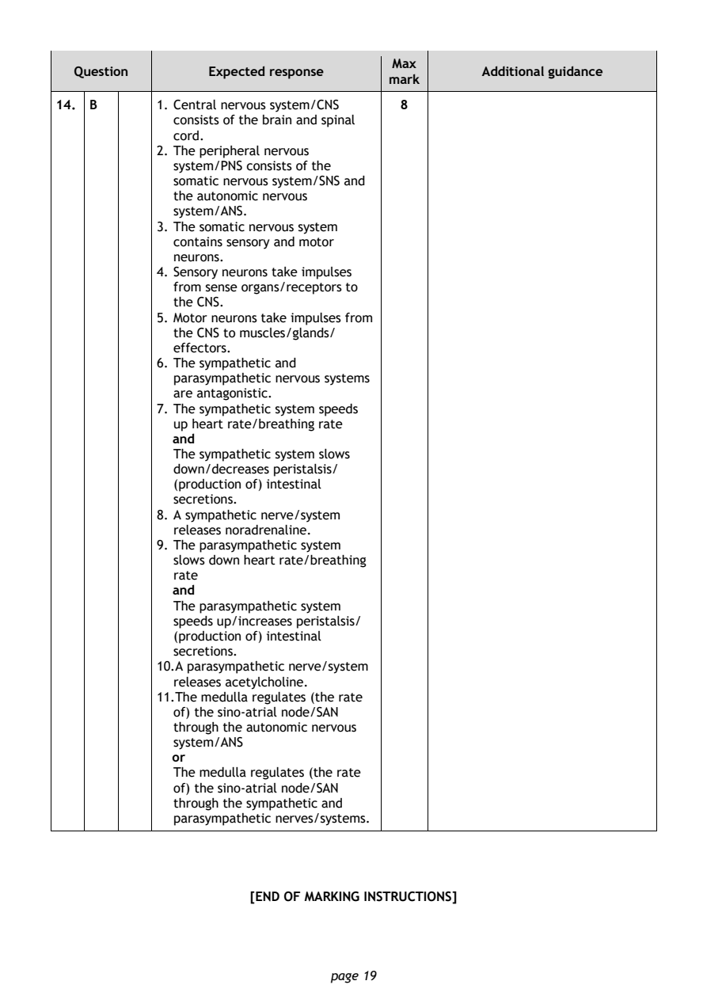
Selectable page text
Max
Question Expected response Additional guidance
mark
14. B 1. Central nervous system/CNS 8
consists of the brain and spinal
cord.
2. The peripheral nervous
system/PNS consists of the
somatic nervous system/SNS and
the autonomic nervous
system/ANS.
3. The somatic nervous system
contains sensory and motor
neurons.
4. Sensory neurons take impulses
from sense organs/receptors to
the CNS.
5. Motor neurons take impulses from
the CNS to muscles/glands/
effectors.
6. The sympathetic and
parasympathetic nervous systems
are antagonistic.
7. The sympathetic system speeds
up heart rate/breathing rate
and
The sympathetic system slows
down/decreases peristalsis/
(production of) intestinal
secretions.
8. A sympathetic nerve/system
releases noradrenaline.
9. The parasympathetic system
slows down heart rate/breathing
rate
and
The parasympathetic system
speeds up/increases peristalsis/
(production of) intestinal
secretions.
10.A parasympathetic nerve/system
releases acetylcholine.
11.The medulla regulates (the rate
of) the sino-atrial node/SAN
through the autonomic nervous
system/ANS
or
The medulla regulates (the rate
of) the sino-atrial node/SAN
through the sympathetic and
parasympathetic nerves/systems.
[END OF MARKING INSTRUCTIONS]
page 19